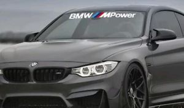
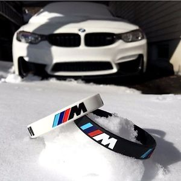
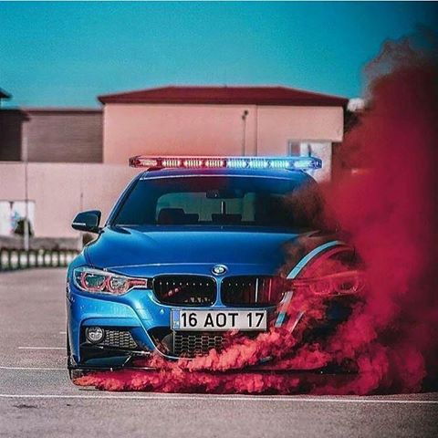

BMW M Power
|  |
BMW AG originated with three other manufacturing companies, Rapp Motorenwerke and Bayerische Flugzeugwerke (BFw) in Bavaria, and Fahrzeugfabrik Eisenach in Thuringia. Aircraft engine manufacturer Rapp Motorenwerke became Bayerische Motorenwerke in 1916. The engine manufacturer, which built proprietary industrial engines after World War I, was then bought by the owner of BFw who then merged BFw into BMW and moved the engine works onto BFw's premises. BFw's motorcycle sideline was improved upon by BMW and became an integral part of their business. |
| ___________________________________________________________ |
History
|  |
Svet automobila je veb sajt za sve ljubitelje sportskih automobila, posebno namenjen za fanove BMW MPower sportske automobile. Ovi sportski automobili su pretezno trkacki automobili i u sebi imaju motore sa veoma jakim kubikazama |
|
| ___________________________________________________________ |
BMW Drift
 |
Drifting is a driving technique where the driver intentionally oversteers, with loss of traction in the rear wheels or all tires, while maintaining control and driving the car through the entirety of a corner. Car drifting is caused when the rear slip angle is greater than the front slip angle, to such an extent that often the front wheels are pointing in the opposite direction to the turn (e.g. car is turning left, wheels are pointed right or vice versa, also known as opposite lock or counter-steering).
|